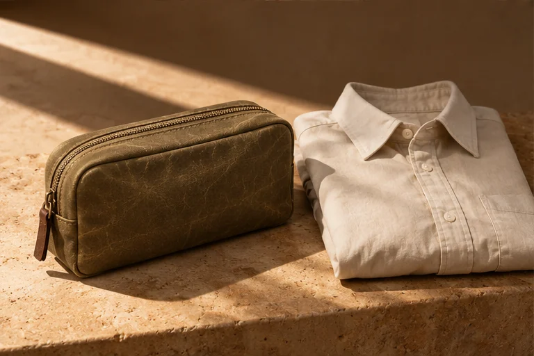
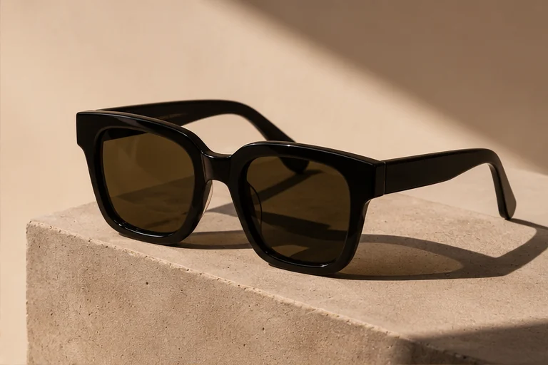

Everyday carry
The Art of Everyday Carry
A practical way to decide what earns a place in your pocket or bag.
Read the storyThe Journal
Useful reads on the things we carry and the details worth paying attention to.

Everyday carry
A practical way to decide what earns a place in your pocket or bag.
Read the story
Buying guide
Start with the cards you use, then choose the shape and construction that suit how you carry them.
Read the story
Perspective
A short checklist for building a practical collection of things you reach for often.
Read the story